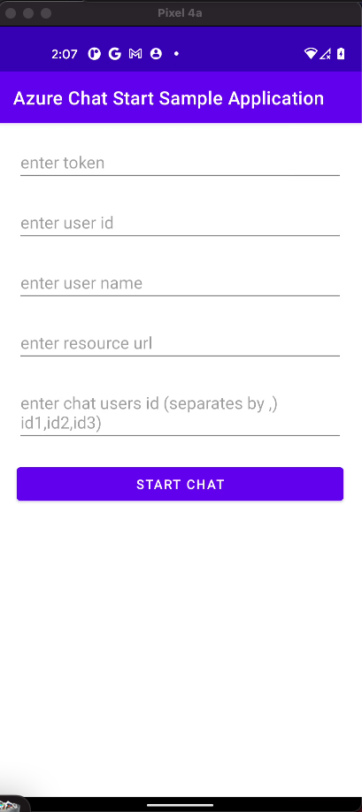
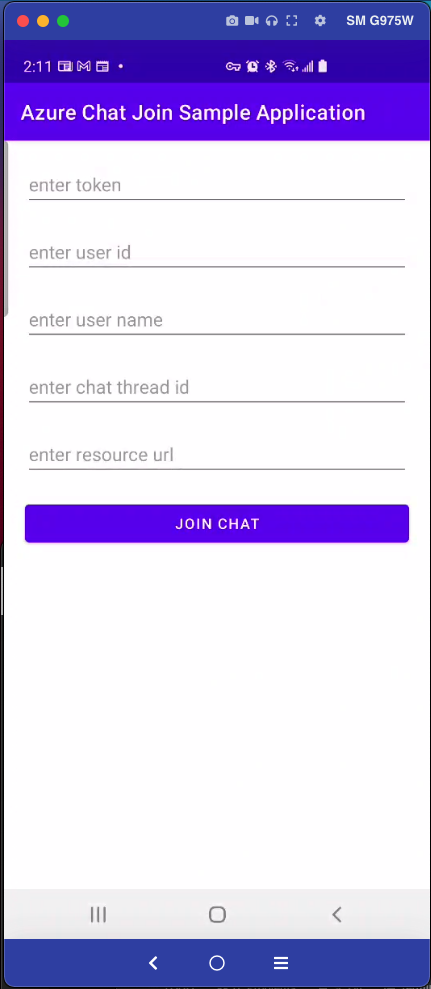
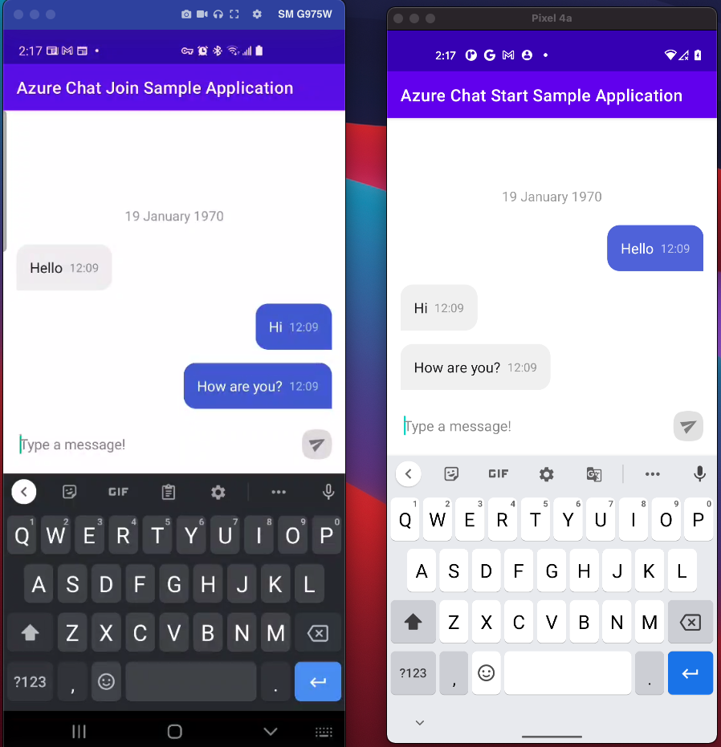

Adding a chat to Android application is made easy by Azure Communication Services. Luckily, the requirement to build user interface can be fulfilled by ChatKit.
At end of this post, you will be familiar with:
- How to build Android Sample Chat Application (GitHub)?
- How to create Azure Communication Services Chat resource?
- How to generate
user tokenanduser idfrom communication service resource connection string?
Build Android Sample Chat Application
- Clone Android Sample Chat Application (GitHub)
- Open
chatjoinandchatadminin Android Studio - Run applications on emulator or device


Create Azure Communication Service Resource
- Open Azure Portal
- Create
Communication Serviceresource - Copy connection string
- More information at Create a Communication Services resource
Generate Communication Service User Token
- Clone access-tokens-quickstart
cdtoaccess-tokens-quickstart- Execute ’npm install`
- Enter connection string copied previously to
const connectionString - Change scope to
chat
// This code demonstrates how to fetch your connection string
// from an environment variable.
const connectionString = "<ACS_CONNECTION_STRING_FROM_PORTAL>";
// Instantiate the identity client
const identityClient = new CommunicationIdentityClient(connectionString);
// This code demonstrates how to fetch your endpoint and access key
// from an environment variable.
/*const endpoint = process.env["COMMUNICATION_SERVICES_ENDPOINT"];
const accessKey = process.env["COMMUNICATION_SERVICES_ACCESSKEY"];
const tokenCredential = new AzureKeyCredential(accessKey);
// Instantiate the identity client
const identityClient = new CommunicationIdentityClient(endpoint, tokenCredential);*/
// Authenticate with managed identity
// const endpoint = "<ACS_CONNECTION_STRING_FROM_PORTAL>";
// const tokenCredential = new DefaultAzureCredential();
// const identityClient = new CommunicationIdentityClient(endpoint, tokenCredential);
// Create an identity
let identityResponse = await identityClient.createUser();
console.log(`\nCreated an identity with ID: ${identityResponse.communicationUserId}`);
// Issue an access token with the "voip" scope for an identity
let tokenResponse = await identityClient.getToken(identityResponse, ["chat"]);
const { token, expiresOn } = tokenResponse;
console.log(`\nIssued an access token with 'voip' scope that expires at ${expiresOn}:`);
console.log(token);
//Refresh access tokens
// Value of identityResponse represents the Azure Communication Services identity stored during identity creation and then used to issue the tokens being refreshed
// let refreshedTokenResponse = await identityClient.getToken(identityResponse, ["chat"]);
// Revoke access tokens
// await identityClient.revokeTokens(identityResponse);
// console.log(`\nSuccessfully revoked all access tokens for identity with ID: ${identityResponse.communicationUserId}`);
// Delete an identity
// await identityClient.deleteUser(identityResponse);
// console.log(`\nDeleted the identity with ID: ${identityResponse.communicationUserId}`);
- Do not forget to comment
Revoke access tokensDelete an identity - Execute
node .\issue-access-token.js - More information at Azure Communication Services Chat to generate Azure Communication Service Token with scope as
chat. access-tokens-quickstart
Having an issue? Check if below video can help.
Start Chat
- Enter required information obtained by executing
node .\issue-access-token.js - On
Start Chatbutton click, you will see aThreadIdgenerated inlogs.ChatThreadID -: 19:Pk6_myvAX.....U1@thread.v2
Join Chat
- Enter required information, input
threadIdfromRun AzureChatAdmin - Click
Join Chat
